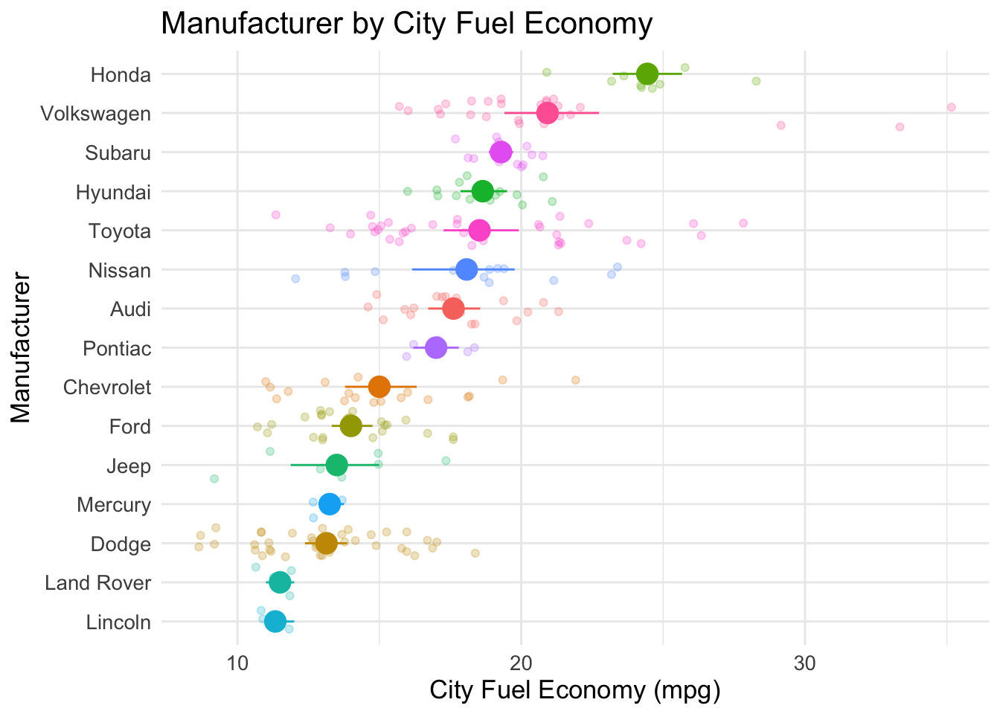
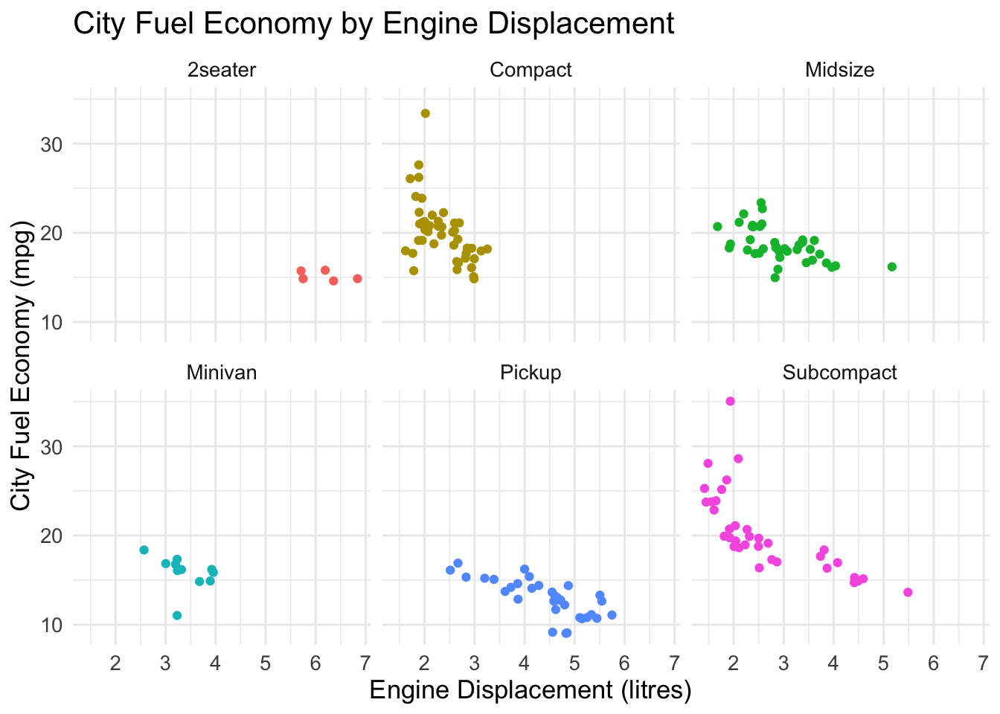

Workshop 4 Data Visualisation
Being able to build clear visualisations is key to the successful communication of your data to your intended audience.
There are a couple of great recent books focused on data visualisation that I suggest you have a look it. They both provide great perspectives on data visualisations and are full of wonderful examples of different kinds of data visualisations, some of which you’ll learn how to build in this workshop.
If you click on the image of the Claus Wilke book, you’ll be taken to the online version of the book (written in R, obviously!)


First I’d like you to watch this brief video where I give some examples of the kinds of data visualisations you can build in R, and why you probably want to avoid building bar graphs.
4.1 The Basics of ggplot2
First we need to load the ggplot2 package. As it is part of the Tidyverse (and we’re likely to be using other Tidyverse packages alongside ggplot2), we load it into our library using the library(tidyverse) line of code.
In the video, I mention that using ggplot2 requires us to specify some core information in order to build our visualisations. These include the raw data that you want to plot, geometries (or geoms) that are the geometric shapes that will represent the data, and the aesthetics of the geometric and objects, such as color, size, shape and position.
4.2 Your First Visualisation
Below is an example where we’re using the mpg dataset (which is a dataset that contains information about cars) to build a visualisation that plots the points corresponding to city fuel economy (cty) on the y-axis and manufacturer on the x-axis.
So, this is not great. The x-axis labels are hard to read, and the individual points don’t look that pleasing. We can use the str_to_title() function to change the manufacturer labels to title case, and adjust the axis labels easily using the theme() function. Note, the + symbol between the lines of ggplot() code is equivalent to the %>% operator. For historical reasons (basically, because ggplot() came before the other packages in the Tidyverse), you need to use the + when adding layers to your ggplot() visualisations.
mpg %>%
mutate(manufacturer = str_to_title(manufacturer)) %>%
ggplot(aes(x = manufacturer, y = cty)) +
geom_point() +
theme(axis.text.x = element_text(angle = 45, vjust = 0.5, hjust = .5))4.2.1 Improving the Plot
So let’s do some more tidying - we’re going to jitter the points slightly (so they’re not stacked vertically) using the geom_jitter() function, and tidy up the axis titles using the labs() function to explicitly add axis labels (rather than just use the labels in our dataset). We’re also adding a few other tweaks - can you spot them?
mpg %>%
mutate(manufacturer = str_to_title(manufacturer)) %>%
ggplot(aes(x = manufacturer, y = cty)) +
geom_jitter(width = .2, alpha = .75, size = 2) +
theme_minimal() +
theme(axis.text.x = element_text(angle = 45, vjust = 0.5, hjust = .5)) +
theme(text = element_text(size = 13)) +
labs(title = "City Fuel Economy by Car Manufacturer",
x = "Manufacturer",
y = "City Fuel Economy (mpg)")It might be helpful for us to add summary statistical information such as the mean fuel economy and confidence intervals around the mean for each car manufacturer.
4.2.2 Adding Summary Statistics
We need to add the Hmisc package to allow us to use the stat_summary() function.
mpg %>%
mutate(manufacturer = str_to_title(manufacturer)) %>%
ggplot(aes(x = manufacturer, y = cty)) +
stat_summary(fun.data = mean_cl_boot, colour = "black", size = 1) +
theme_minimal() +
theme(axis.text.x = element_text(angle = 45, vjust = 0.5, hjust = .5)) +
theme(text = element_text(size = 13)) +
labs(title = "City Fuel Economy by Car Manufacturer",
x = "Manufacturer",
y = "City Fuel Economy (mpg)")4.2.3 The Finished(?) Plot
At the moment, the x-axis is ordered alphabetically. How about we order it so that it goes from manufacturer with the hightest mean fuel economy, to the lowest. Also, how about we flip the visualisation so that the axes swap and add a few other tweaks?
mpg %>%
mutate(manufacturer = str_to_title(manufacturer)) %>%
ggplot(aes(x = fct_reorder(manufacturer, .fun = mean, cty), y = cty, colour = manufacturer)) +
stat_summary(fun.data = mean_cl_boot, size = 1) +
geom_jitter(alpha = .25) +
theme_minimal() +
theme(text = element_text(size = 13)) +
labs(title = "Manufacturer by City Fuel Economy",
x = "Manufacturer",
y = "City Fuel Economy (mpg)") +
guides(colour = 'none') +
coord_flip()
This looks pretty good. Can you tell what the other bits of code do that I added? Have a go changing some of the numbers to see what happens. You can prevent a line of code being run by adding a # in front of it. So if you need to temporarily not run a line, just add a # rather than delete the line.
Plots are rarely completely “finished” as you’ll often think of a minor aesthetic tweak that might make some improvement.
4.2.4 Using facet_wrap()
We might think that fuel economy varies as a function of the type of vehicle (e.g., sports cars may be more fuel hungry than midsize cars) and by the number size of engine (e.g., cars with bigger engines may be more fuel hungry). In the visualisation below we’re going to use the facet_wrap() function to build a separate visualisation for each level of the factor we are facetting over (ignoring SUVs).
mpg %>%
filter(class != "suv") %>%
mutate(class = str_to_title(class)) %>%
ggplot(aes(x = displ, y = cty, colour = class)) +
geom_jitter(width = .2) +
theme_minimal() +
theme(text = element_text(size = 13)) +
labs(title = "City Fuel Economy by Engine Displacement",
x = "Engine Displacement (litres)",
y = "City Fuel Economy (mpg)") +
guides(colour = 'none') +
facet_wrap(~ class)
Can you tell what each bit of code is doing? Again, edit the numbers and put a # before lines you want to temporarily ignore to see what happens.
4.3 Scatterplots
Above we focused on plotting a numerical variable on one axis, and a categorical variable on the other. There will be cases where we want to create scatterplots, allowing us to plot two numerical variables against each other - possibly to determine whether there might be a relationship between the two. Below we are plotting Engine Displacement on the y-axis, and City Fuel Economy on the x-axis.
mpg %>%
mutate(class = str_to_upper(class)) %>%
ggplot(aes(x = cty, y = displ)) +
geom_point(aes(colour = class)) +
geom_smooth(se = FALSE) +
theme(text = element_text(size = 13)) +
theme_minimal() +
labs(x = "City Fuel Economy (mpg)",
y = "Engine Displacement (litres)",
colour = "Vehicle Class")In the above example, we used the geom_smooth() function to add a layer corresponding to fitting a curve to our data. We can see a fairly clear negative correlation between Engine Displacement and Fuel Economy for Fuel Economy values that are less than 25 mpg, but little relationship between the two for values that are great than 25 mpg. These seems to suggest there are some cars with relatively small engines that have great fuel economy, and others with similar engine sizes that have much worse fuel economy.
4.4 Plotting Histograms
We might want to plot a histogram of engine sizes (measured in litres and captured in the variable displ in the mpg dataset) to get a feel for how this variable is distributed.
mpg %>%
ggplot(aes(x = displ)) +
geom_histogram(binwidth = .5, fill = "grey") +
labs(title = "Histogram of Engine Displacement",
x = "Engine Displacement (litres)",
y = "Count")4.4.1 The ggridges Package
Given in a previous visualisation we saw that there seemed to be variability between vehicle classes, wouldn’t it be great if we could compare the distributions of engine size separated by vehicle class? We’re now going to use the ggridges package to do just that…
mpg %>%
mutate(class = str_to_title(class)) %>%
ggplot(aes(x = displ, y = fct_reorder(class, .fun = mean, displ))) +
geom_density_ridges(height = .5, aes(fill = class)) +
theme_minimal() +
theme(text = element_text(size = 13)) +
guides(fill = 'none') +
labs(x = "Engine Displacement (litres)",
y = NULL)We can see from the above visualisation that SUVs seem to have quite a lot of variability in engine size while compact cars have relatively little variability.
4.5 The NHANES Dataset
We’re now going to visualise aspects of the NHANES dataset.
This is survey data collected by the US National Center for Health Statistics (NCHS) which has conducted a series of health and nutrition surveys since the early 1960’s. Since 1999 approximately 5,000 individuals of all ages are interviewed in their homes every year and complete the health examination component of the survey. The health examination is conducted in a mobile examination centre (MEC). The NHANES target population is “the non-institutionalized civilian resident population of the United States”. NHANES, (American National Health and Nutrition Examination surveys), use complex survey designs (see http://www.cdc.gov/nchs/data/series/sr_02/sr02_162.pdf) that oversample certain subpopulations like racial minorities. Naive analysis of the original NHANES data can lead to mistaken conclusions. The percentages of people from each racial group in the data, for example, are quite different from the way they are in the population.
We need to load the NHANES package as this is where the dataset is contained.
If running the above command generated an error, is it because you haven’t installed the package on your machine with install.packages("NHANES")?
First we’re going to explore the NHANES dataset.
## [1] 76## [1] 10000We see there are 76 columns and 10,000 rows. If we use the function head() we can see the first few rows of the dataframe.
## # A tibble: 6 × 76
## ID SurveyYr Gender Age AgeDecade AgeMonths Race1 Race3 Education
## <int> <fct> <fct> <int> <fct> <int> <fct> <fct> <fct>
## 1 51624 2009_10 male 34 " 30-39" 409 White <NA> High School
## 2 51624 2009_10 male 34 " 30-39" 409 White <NA> High School
## 3 51624 2009_10 male 34 " 30-39" 409 White <NA> High School
## 4 51625 2009_10 male 4 " 0-9" 49 Other <NA> <NA>
## 5 51630 2009_10 female 49 " 40-49" 596 White <NA> Some College
## 6 51638 2009_10 male 9 " 0-9" 115 White <NA> <NA>
## # ℹ 67 more variables: MaritalStatus <fct>, HHIncome <fct>, HHIncomeMid <int>,
## # Poverty <dbl>, HomeRooms <int>, HomeOwn <fct>, Work <fct>, Weight <dbl>,
## # Length <dbl>, HeadCirc <dbl>, Height <dbl>, BMI <dbl>,
## # BMICatUnder20yrs <fct>, BMI_WHO <fct>, Pulse <int>, BPSysAve <int>,
## # BPDiaAve <int>, BPSys1 <int>, BPDia1 <int>, BPSys2 <int>, BPDia2 <int>,
## # BPSys3 <int>, BPDia3 <int>, Testosterone <dbl>, DirectChol <dbl>,
## # TotChol <dbl>, UrineVol1 <int>, UrineFlow1 <dbl>, UrineVol2 <int>, …4.5.1 Tidying the Data
It looks like some participants appear more than once in the dataset - this could be due to the oversampling mentioned in the description - the first few rows are all for participant ID 51624. We can use the select() function alongwith the n_distinct() function to tell us the unique number of IDs in the dataset.
## [1] 6779We see we have 6,779 unique individuals. Let’s tidy our data to remove duplicate IDs. Note that below we’re using the pipe operator %>% You can read it as ‘and then’ so it means we’re taking the NHANES dataset and then filtering it keeping just rows with distinct ID numbers. The pipe operator really helps with the readability of your data wrangling code and is an integral part of the tidyverse philosophy - tidy data and tidy code.
## [1] 76## [1] 6779OK, so our tidied dataset is assigned to the variable NHANES_tidied and has 6,779 rows (but still 76 columns) - as we’d expect given we have 6,779 unique individuals.
4.5.2 Plotting a Histogram
Let’s start exploring the data. We have lots of potential variables and relationships to explore. I see we have one labelled Education which is coded as a factor. We also have information related to health such as BMI - first of all lets plot a histogram of BMI.
We see a pretty right skewed distribution here. Note our use of the na.rm parameter - this parameter appears in many tidyverse functions and by setting it to TRUE we tell R to ignore any parts of our data frame where we have missing data (which is indicated by NA).
4.5.3 Summary Statistics
Does BMI vary as a function of Education level? In the code below we are using the data stored in the variable NHANES_tidied, grouping it by Education, then summarising to generate the median BMI for each of our groups. Again, we use the na.rm = TRUE parameter with the summarise() function this time to remove any missing values (NA) from our calculation.
## # A tibble: 6 × 2
## Education median
## <fct> <dbl>
## 1 8th Grade 28.6
## 2 9 - 11th Grade 28.2
## 3 High School 28.2
## 4 Some College 28.4
## 5 College Grad 26.5
## 6 <NA> 18.9So it looks like those with College eduction have the lowest median BMI (ignoring the NA category which corresponds to cases where we don’t have Education level recorded).
4.5.4 geom_violin()
Let’s graph it! Note here we’re filtering out cases where we don’t have BMI value recorded. The function is.na() returns TRUE when applied to a case of missing data (NA) - we use the ! operator to negate this and combine several of these expressions together using the logical AND operator &.
The line of code below starting with filter() means filter cases where Education is not missing AND BMI is not missing. This means that the NHANES_tidied data that gets passed to the ggplot() call has no missing data for the key variables we’re interested in.
I then add a geom_violin() layer to capture the shape of the distribution for each level of Education and geom_boxplot() layer to create a boxplot for each level of our Education factor.
The guides(colour = 'none') call suppresses displaying the colour legend - place a # in front of it and rerun the code to see what changes.
NHANES_tidied %>%
filter(!is.na(Education) & !is.na(BMI)) %>%
ggplot(aes(x = Education, y = BMI, colour = Education)) +
geom_violin() +
geom_jitter(alpha = .2, width = .1) +
geom_boxplot(alpha = .5) +
guides(colour = 'none') +
labs(title = "Examining the effect of education level on BMI",
x = "Education Level",
y = "BMI")4.5.5 Plotting Interaction Effects
We can also plot how two factors interact with each other. For the plot above, we’ll now add the factor Diabetes (which has two levels - Yes vs. No) to see how that might interact with Education level. To capture the nature of this interaction, we use the expression Education:Diabetes when we specify the x-axis aesthetic. Note, I have rotated the x-axis labels 45 degrees to make them easier to read.
NHANES_tidied %>%
filter(!is.na(Education) & !is.na(BMI) & !is.na(Diabetes)) %>%
ggplot(aes(x = Education:Diabetes, y = BMI, colour = Education)) +
geom_violin() +
geom_jitter(alpha = .2, width = .1) +
geom_boxplot(alpha = .5) +
guides(colour = 'none') +
theme(axis.text.x = element_text(angle = 45, vjust = 0.5)) +
labs(title = "Examining the effect of education level and diabetes on BMI",
x = "Education Level x Diabetes",
y = "BMI")We can see from the above plot that those with Diabetes seem to also have higher BMI scores for each level of Education.
4.5.6 Histograms with facet_wrap()
We can also plot histograms of BMI separately for each Education level - we use the facet_wrap() function to do this.
NHANES_tidied %>%
filter(!is.na(Education) & !is.na(BMI)) %>%
group_by(Education) %>%
ggplot(aes(x = BMI, fill = Education)) +
geom_histogram() +
guides(fill = 'none') +
labs(title = "Examining the effect of education level on BMI",
x = "BMI",
y = "Number of cases") +
facet_wrap(~ Education)In the above graph, notice that the same y-axis scale is used for each plot - this makes comparisons a little tricky as there are different numbers of cases for each Eduction level. Add the following scales = "free" after Education in the facet_wrap() line. What changes?
Instead of generating the histograms using a count, we could generate them using a density function. Let’s also add a density curve.
NHANES_tidied %>%
filter(!is.na(Education) & !is.na(BMI)) %>%
group_by(Education) %>%
ggplot(aes(x = BMI, fill = Education)) +
geom_histogram(aes(y = ..density..)) +
geom_density(aes(y = ..density..)) +
guides(fill = 'none') +
labs( title = "Examining the effect of education level on BMI",
x = "BMI",
y = "Density") +
facet_wrap(~ Education)